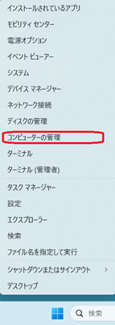
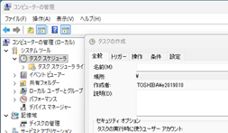

★ 【PowerShell】アプリの不要ファイル(tmp/log)削除スクリプト ★
【１】はじめに
PCを使用していると一時ファイルが蓄積して知らない間にDiskの容量を圧迫しているケースがあると思います。
この様なケースに対応するためにWindowsにはcleanmgrという不要ファイルを管理／削除するツールがあります。
また、Windows11になって、「設定」→「システム」→「ストレージ」で不要ファイルの管理／削除が行えるようになりました。
これにより、不要ファイルによるDisk領域の圧迫を解消することができます。
しかしながら、cleanmgrなどのシステム標準機能は、主に「Windows OSそのものが管理する一時ファイル」や「古いシステムアップデート」を対象としています。
このため、各アプリケーションが個別に生成したテンポラリファイルやログファイルについてはケアしてません。
そこで、ユーザー領域（LOCALAPPDATA 配下）にあるアプリケーション固有の不要なファイルを削除するPowerShellスクリプトを作成しましたのでご紹介致します。
システム標準機能では、ユーザー領域（LOCALAPPDATA配下など）にあるアプリケーション固有の不要なファイルを完全には掃除しきれないことが多いため、
このスクリプトは「かゆいところに手が届く」補完的な役割を果たします。
ちなみに、私が自分のPCで、初めて本スクリプトを実行したときは、7GBもの不要データの削減ができました!
【２】動作環境
本スクリプトは、以下の環境で動作を確認しています。
【３】機能
本スクリプトは、以下の機能を有しています。
- ユーザー領域（LOCALAPPDATA配下）にあるアプリケーション固有の不要なファイル（テンポラリやログ）を削除します。
- アプリが使用中のファイルはスキップします。
【４】ソースコード
適当なフォルダに、ファイル名「Clean_temp.ps1」で保存してください。
Write-Host "=== Clean Temp & Log Start ==="
# Temp削除
Remove-Item "$env:LOCALAPPDATA\Temp\*" -Recurse -Force -ErrorAction SilentlyContinue
# log削除（7日以上前だけにする）
Get-ChildItem "$env:LOCALAPPDATA" -Recurse -Include *.log |
Where-Object { $_.LastWriteTime -lt (Get-Date).AddDays(-7) } |
Remove-Item -Force -ErrorAction SilentlyContinue
# tmp削除
Get-ChildItem "$env:LOCALAPPDATA" -Recurse -Include *.tmp |
Remove-Item -Force -ErrorAction SilentlyContinue
Write-Host "=== Completed ==="
【５】注意事項
また実運用にあたっては、以下の点にご注意ください。
- Outlook/Teams/Edgeなどのアプリはなるべく停止させて下さい。
使用中のテンポラリファイルは削除しません。
- 問題発生PCには使用しないで下さい
ログファイルを削除するため障害調査のためのログ解析ができなくなります
【６】実行
PowerShellスクリプトは、以下の手順で実行できます。
- 「スタート」→「PowerShell」検索
- 右クリック → 管理者として実行
- cleanup_temp.ps1が存在するフォルダへ移動(例："C:\Scripts")：
cd C:\Scripts
- cleanup_temp.ps1を実行する：
.\cleanup_temp.ps1
補足１．エラーについて
「スクリプトの実行が無効」などのエラーが出た場合は、以下を実行して下さい。
- まず以下のコマンドを１回だけ実行。
Set-ExecutionPolicy -Scope Process -ExecutionPolicy Bypass
- その後、もう一度以下を実行。
.\cleanup_temp.ps1
補足２．自動実行について
自動実行はWindows11の場合タイムスケジューラから設定できます
- タイムスケジューラ起動
- スタートメニューを右クリックして、「コンピュータの管理」をクリック

- 「タイムスケジューラ」を選択。
- 「操作(A)」→「タスクの作成(R)...」を選択

- 「全体」タブの「名前(M)」にタイトル入力(「_Clean_Temp」など)
- 「トリガー」タブの「新規(N)」をクリックして、運用に合わせてトリガー条件を設定する
- 「操作」タブの「新規(N)」をクリックして、以下を実施する
- プログラム/スクリプト(P)」に以下のように入力
※フルパス（例：「C:\Windows\System32\WindowsPowerShell\v1.0\powershell.exe」）でも良い
powershell.exe
- 「引数の追加(オプション)(A)」に以下のように入力
-ExecutionPolicy Bypass -File "C:\Scripts\cleanup_temp.ps1"
- 「開始(オプション)(T)」に以下のように入力
C:\Scripts\
【７】技術的解説
本スクリプトは、ユーザーの環境（LOCALAPPDATA）に蓄積される一時ファイルや古いログを整理するためのものです。
以下各行の説明を記載します。
| 行番号 | 実行コード | 解説 |
| 1 | Write-Host "=== Clean Temp & Log Start ===" | コンソール画面に、クリーンアップ作業を開始する旨のメッセージを表示。 |
| 3-4 | # Temp削除
Remove-Item "$env:LOCALAPPDATA\Temp\*" -Recurse -Force -ErrorAction SilentlyContinue | ユーザーの一時フォルダ内のすべてのファイルを強制的に再帰削除。削除できないファイル（使用中のもの等）があってもエラーを出さずに処理を続行。 |
| 6-9 | # log削除（7日以上前だけにする）
Get-ChildItem ... | 更新日時が7日以上経過したログファイルの削除。 |
| 11-13 | # tmp削除
Get-ChildItem ... | 拡張子が「.tmp」ファイルの削除。 |
| 15 | Write-Host "=== Completed ===" | コンソール画面に、すべての作業が完了したことを知らせるメッセージを表示。 |
ポイント
- 安全性の確保:4行目の Remove-Item "$env:LOCALAPPDATA\Temp\*" は、
フォルダそのものではなく、その中身を削除する意図で書かれています。
もし意図せずフォルダごと削除したくない場合は、現在の記述（ワイルドカード指定）で正しく動作します。
- ログ削除の範囲:7行目で Get-ChildItem に -Recurse を指定しているため、
LOCALAPPDATA 直下だけでなく、その中にあるサブフォルダ内のログも全て探索します。これは非常に強力ですが、
もし特定アプリの重要なログまで消えてしまう場合は、
$env:LOCALAPPDATA の箇所を "$env:LOCALAPPDATA\SomeApp\Logs" のように具体的に指定することで、
より安全な運用が可能になります。
【改訂記録】
2026/06/13版：公開
[ホームへ戻る］